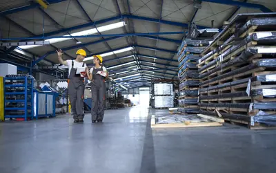
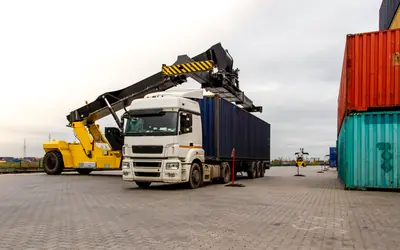
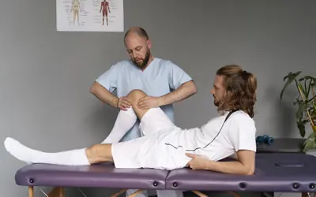
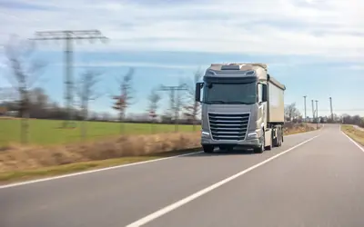

Analizamos el riesgo de tu empresa y diseñamos un programa de seguros a medida, con el respaldo de las compañías más solventes de cada ramo.
Entra en cada seguro para ver en detalle qué cubre. Cuando lo tengas claro, pídenos presupuesto y te preparamos una comparativa a medida.

Instalaciones, maquinaria y existencias, más la pérdida de beneficios si un siniestro para la actividad.
Ver seguroRC general, patronal, de productos y post-trabajos, adaptada al sector y a la facturación de la empresa.
Ver seguroProtege el patrimonio personal de quien administra o dirige la sociedad frente a las reclamaciones por sus decisiones de gestión.
Ver seguroCubre los costes y el impacto en el negocio de los incidentes derivados de un ataque informático.
Ver seguroCubre la obligación de prevenir, evitar y reparar los daños medioambientales que impone la Ley 26/2007.
Ver seguroEl crédito garantiza el cobro ante la insolvencia del deudor; la caución, el cumplimiento de tus obligaciones.
Ver seguroTodos los vehículos del negocio en una sola póliza, con condiciones y renovación unificadas.
Ver seguro
Seguro de daños sobre las mercancías transportadas y los medios que las transportan.
Ver seguroCobertura de los riesgos que afectan a las explotaciones agrícolas, ganaderas o forestales.
Ver seguroEl seguro obligatorio para circular, más la responsabilidad civil de los trabajos agrícolas que no todas las pólizas incluyen.
Ver seguroPólizas de moto para los vehículos de dos ruedas de la empresa.
Ver seguroSeguros de vida individuales y colectivos para directivos y plantilla, incluidos los derivados de convenio.
Ver seguroPólizas de salud colectivas como herramienta de retribución flexible y de fidelización del equipo.
Ver seguro
Accidentes de trabajo y las coberturas obligatorias por convenio colectivo para la plantilla.
Ver seguroPlanes de empleo, compromisos por pensiones y seguros de jubilación para la plantilla.
Ver seguroSeguros de ahorro para instrumentar la política de previsión y retribución de la empresa.
Ver seguroDefensa y reclamación de los intereses de la empresa con abogados expertos.
Ver seguro
Camiones, furgonetas, cabezas tractoras, remolques y vehículos agrícolas de la empresa, asegurados según el trabajo que hace cada uno.
Ver seguroTe preparamos un presupuesto personalizado y una comparativa a medida, el mejor respaldo para la decisión correcta.